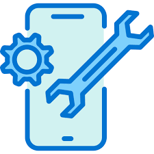

Bienvenue au Repair Café
« Rien ne se perd, tout se repair ! »
Le Repair Café est avant tout un lieu d'échange et de partage. Venez bénéficier de l'expertise technique de nos bénévoles, apprendre à diagnostiquer vos pannes et redonner vie à vos équipements dans une ambiance conviviale.
Accéder à nos services

Horaires d'ouverture
Nous sommes disponibles pour vous accompagner dans toutes vos réparations aux créneaux suivants :
- Chaque jeudi : 14h00 - 17h00
Équipements pris en charge
Nos compétences couvrent une large gamme de matériaux informatiques du quotidien :
- Ordinateurs fixes et portables
- Téléphones portables et smartphones
- Tablettes tactiles et consoles
Besoin de conseils ?
Venez discuter avec nous autour d'un bon café ! Profitez d'expertises techniques fiables et de délicieuses boissons gratuites durant l'accompagnement.